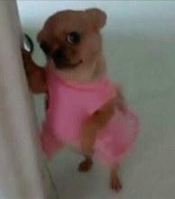
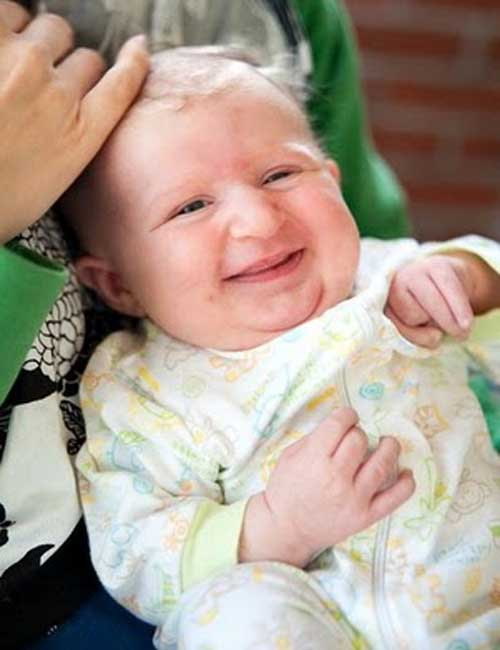
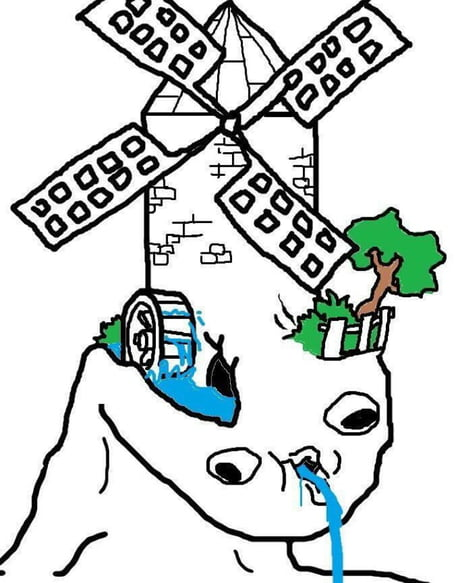

Rémi j'ai pas fait qqc de trop sérieux psq jsuis pas quelqu'un de sérieux t'as vu et puis de toute façon j'ai rien à dire mon profil aurait pas été très intéressant psq au fond jsuis un peu comme tout le monde alors je vais éviter de faire genre avec une photo de moi avec un beau costard et une cravate psq jsuis pas hypocrite et tu vois eux quand ils rentrent à la maison chez eux bah ils sont pas heureux et la voisine elle m'a dit que de toute façon comme je disais pas toujours bonjour j'étais bonne à rien et je servais pas à grand chose alors qu'elle sa fifille adorée elle est aimable, ensuite même mon chat il m'a fait comprendre que je suis nulle psq je sais jamais quand il a faim donc je me prends plus la tête j'en ai marre de toujours devoir me justifier j'arrive jamais à rien hier j'ai fait cuire le gateau trop longtemps alors ma maman m'a engueulée et puis j'ai pas effectué un rendu à temps alors mon équipe me boycott et quand j'ai montré mes pieds au docteur hier j'ai senti dans son regard un peu de désapprobation donc moi le regard des autres c'est fini, mais attend regarde j'ai déguisé mon chien en Cardi B hier
bref j'ai essayé au moins l'important c'est de participer pas de gagner, d'habitude c'est une phrase de looser un peu mais là elle m'arrange psq au final on a quoi à gagner dans cette vie moi mes collègues ils m'énervent à tout le temps vouloir des bonnes notes moi je suis heureuse quand je retrouve une vieille console avec laquelle je jouais regarde j'ai retrouvé Mario 64 hier bah voila je suis heureuse maintenant et ils vont rien faire du tout à part la vaisselle
bon du coup voila, jpense que comme profil j'aurais pas pu faire pire et puis de toute façon je vais retourner à mes activités qui me divertissent de la mort comme le narrait si bien Pascal dans Pensées, on souhaite tous échapper à notre finalité ultime alors que chaque jour passé sur Terre est un pas toujours plus certain vers notre tombe. Sur ce, je retourne jouer à Zelda: a link to the past psq les RPG au moins ils me comprennent tu vois je peux dire ce que je veux, enfin même s'ils me comprennent pas au moins ils se taisent c'est pas comme les autres à tout le temps monter sur leurs grands chevaux là à vouloir me faire emmener chez un psy alors que c'est eux qui ont des complexes d'Oedipe depuis la primaire et ensuite quand je l'aurai fini je refinirai mario bros wii pour la 3è fois depuis le premier confinement et puis ensuite je réessayerai d'avancer sur mario bros the next levels alors que c'est une version crackée avec des niveaux salement durs et je suis sûre qu'arrivée au deuxième monde là celui avec le sable et les dunes et les pyramides bah ça va crasher comme d'hab psq le jeu est pas fini un peu comme moi mais au moins ça me ferait oublier que les controllers wii u pro sont introuvables alors que j'en ai marre de jouer à Smash Bros Brawl avec un controller wii basique comme quand j'avais 8 ans alors que j'entends même pas le son quand je gagne des pièces psq mon père parle toujours trop fort à côté
Une photo de moi bébé
Moi en train de faire le projet coding à 3 du sbah
j'espère que ça t'a plu moi en tout cas oui <3